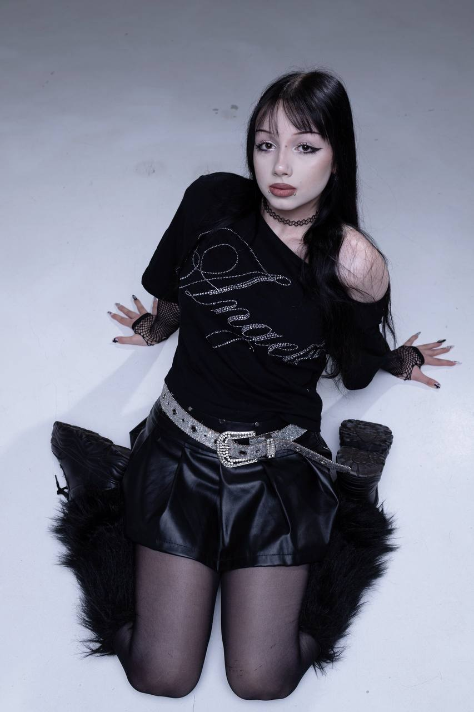
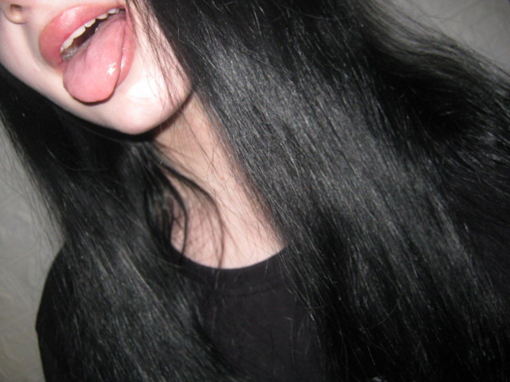

🎧Щирі
тексти
Кожна пісня передає справжні емоції та переживання.

SAMARA
Починаюча виконавиця
Перша пісня • Repeat • 2026
Про Машу
SAMARA — творча людина, яка вже давно захоплюється музикою та поступово перетворює своє хобі на щось більше. Вона займається вокалом і регулярно виступає на концертах у студії YUKIE STAR, де продовжує вдосконалювати свої навички та здобувати сценічний досвід.
Псевдонім SAMARA з'явився зовсім несподівано — після перегляду фільму, в якому був персонаж із таким ім'ям. Воно запам'яталося своєю загадковістю та атмосферою, тому згодом стало частиною її творчого образу.
У житті Маша весела, відкрита й трохи загадкова. Вона любить незвичайний стиль в одязі, знаходити натхнення у найрізноманітніших речах та пропонувати ідеї для своїх пісень. Зараз вона працює над наступною метою — накопичити кошти на випуск другої композиції та продовжити розвивати свій музичний проєкт.
Чому варто слухати?
🎶Атмосферне
звучання
Музика створює настрій, до якого хочеться повертатися знову і знову.
💜Авторська
музика
Кожна робота створюється з увагою до деталей та власною атмосферою.
Останні фотографії



Музика починається там, де закінчуються звичайні слова.